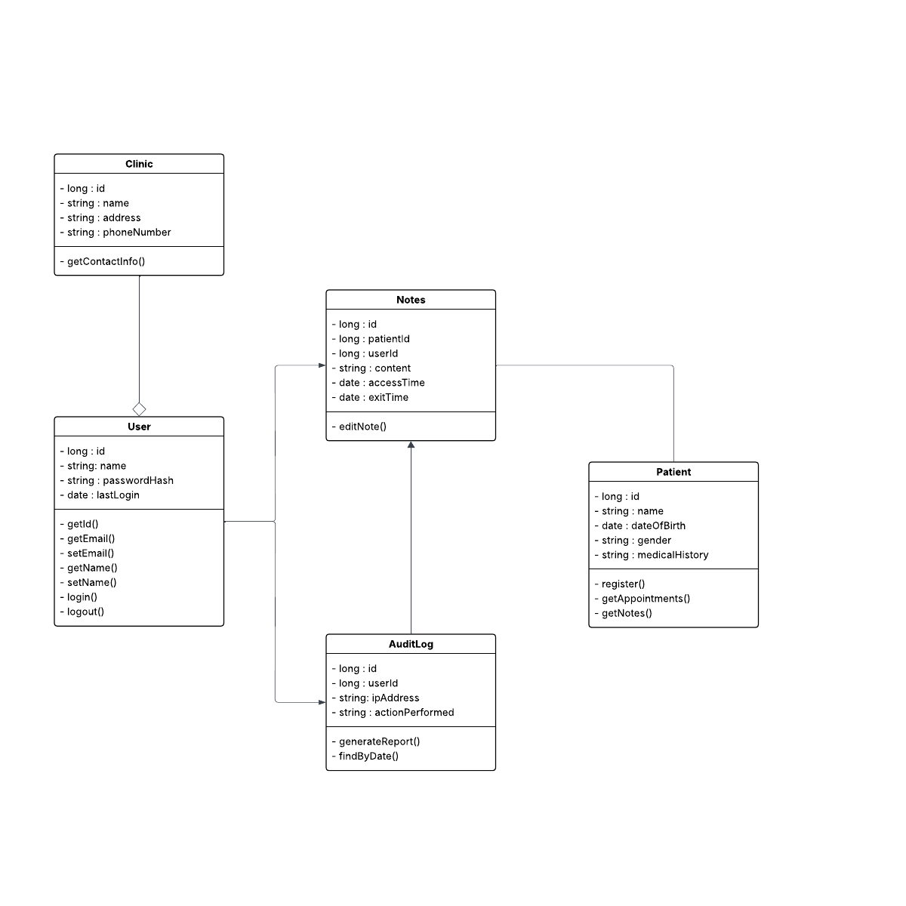

This is a product website that contains user documentation, developer documentation, and UML diagrams associated with the SOAP Note Word Processor. This project is part of a capstone course ESOF 423. Below you will find links to the developer and user documentation as well as the GitHub repository containing the source code.
